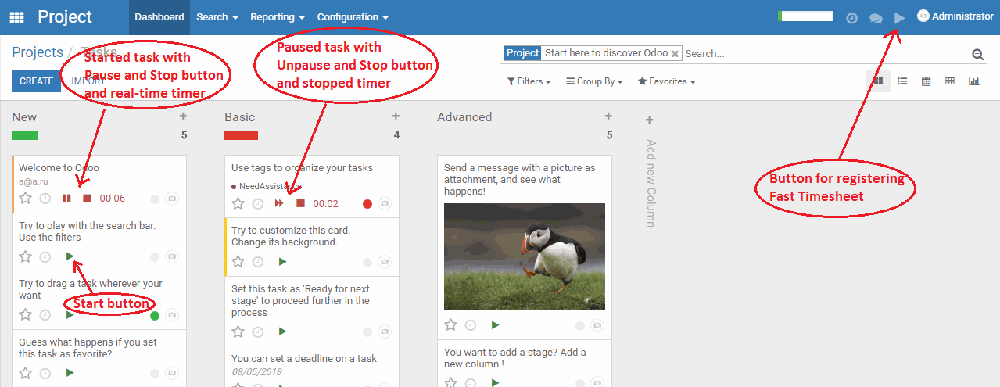

This module for Odoo Community Edition
Start Stop Pause functions for Project Task
Add Start Stop and Pause buttons in Kanban and Form view with the preservation of working time in the timesheets, and use the Fast Timesheet
DEMO: http://demo.business-apps.ru, LOGIN demo PASSWORD demo
To properly save timesheets, the user needs to be an Employee. You can not run the task if the user is not an employee. In the module there is an auto refresh mechanism Kanban and Form view. If one of the users in your browser launches or stops the task - in a few seconds it will be seen by other users if they open this view.
